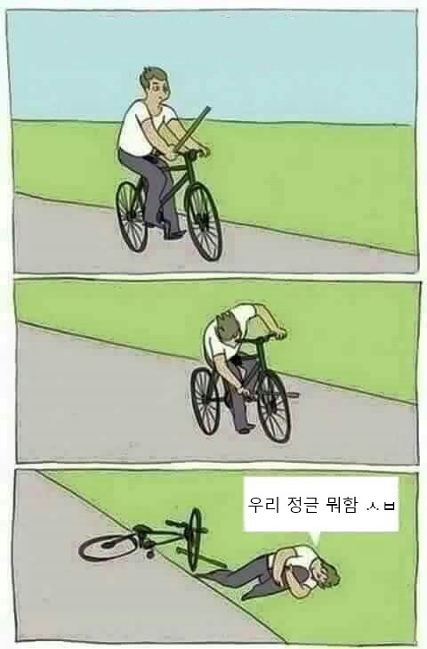

뇌지컬
게임을 200판 했을때 승률이 50% 라면?
그곳은 너의 티어다. -geumsu
이쯤에서 글의 권위를 높이기위해 자기소개를 하겠습니다.
시즌10 다이아4 승률 70% 달성
시즌10 다이아2 승률 65% 달성
다이아 1~2구간 경험 있음
아쉽게도 시즌 마감 일주일전에 다이아2를 달성
본인의 한계를 측정하지못함
현티어 플레1
부끄럽지만 뭐 이정도면 자격은 있다고 생각합니다.
롤을 3년 5년 1000판 2000판을 해도 티어를 못올리는 이유가 무엇일까요?
재능이 없는걸까요? 노오력이 부족한걸까요?
그건 바로 개돼지마냥 얻어가는거 없이 게임만 돌리기 때문입니다.

좋은 소식이 있습니다.
대다수의 사람들은 롤을 하면서 생각이란걸 하지 않기 때문에
여러분들이 조금의 생각을 하신다면 다 이길 수 있습니다.
뇌지컬
롤의 개념
챔피언의 상성
게임이 굴러가는 방식
시야
등등 후에 추가